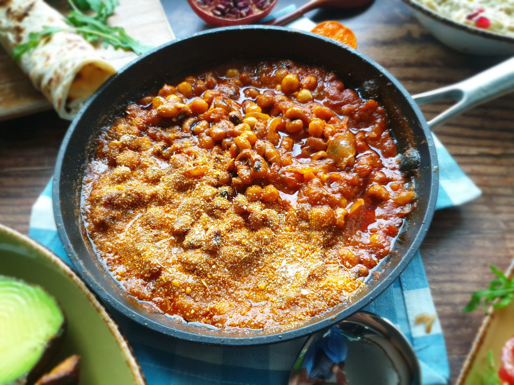

Beans and Gari

Description
Ingredients
- Beans/li>
- Gari
- Spices
- Stew
- Coconut Oil
Steps
- prepare your stew
- cook your beans
- add your beans to the stew
- stire till the beans is well cooked in the stew
- sprinkle a handful of gari on your plate of beans
- Bon apetite